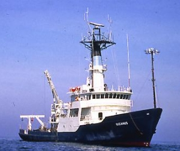

|  copyright - WHOI |
|
Oceanus arrived in Woods Hole in November of 1975. The vessel
is owned by the National Science Foundation (NSF) and operated by WHOI.
She has worked extensively in the Atlantic on a variety of biological,
chemical, geological, physical, and engineering cruises.
In 1994 Oceanus underwent an extensive 8 month mid-life refit at
Atlantic Drydock in Jacksonville, Florida. The NSF provided a grant for
the $3.5 million project to refit and upgrade the vessel'’s technology,
equipment, and laboratories.
Sister ships: Wecoma, operated by Oregon State University, and
Endeavor, operated by the University of Rhode Island.